第 1-8 课按学习顺序讲：认识、上手、工作流、工具、验收、沉淀。
跳到对应章节第 9 课完整保留案例一到十五，外加 image2 补充，全部改成教程型写法。
跳到对应章节第 10 课给讲师、员工和管理者一套训练与验收标准。
跳到对应章节全部案例一眼看完
飞书侧栏里的 Codex 案例是一整套练习，不是某一个单独案例。
这份网站会把它们全部放进第 9 课：从知识库问答、Chrome、文件处理、流程图、设计稿、CI、视频、Wiki、Notion、PPT、Playwright、飞书资料提取，一直到云服务发布。
| 分组 | 包含案例 | 主要练什么 |
|---|---|---|
| 资料和知识 | 案例一、案例九、案例十、案例十一 | 知识库问答、资料整理、笔记网站、长期沉淀 |
| 工具和外部系统 | 案例二、案例三、案例五、案例六、案例十四 | 实时查询、浏览器操作、流程图、设计稿、飞书资料提取 |
| 交付和验收 | 案例四、案例七、案例十二、案例十三、案例十五 | 文件批处理、CI、PPT、网页自动检查、部署回滚 |
| 教学辅助 | 案例八、补充 image2 | 教学视频、截图转设计稿 |
🤖Codex 实践教程
👍Codex 完整案例教学
0. 学习入口
这份教程按“先会用、再会用好、最后能教别人”的顺序写。
读者不用先懂代码，也不用先懂 AI 术语。
只要你平时需要整理资料、写文档、改网页、做表格、检查页面、生成课件、发布内容，就可以从这里开始。
0.1 读完以后要会什么
| 能力 | 读者读完应该会 | 不追求什么 |
|---|---|---|
| 判断任务 | 知道哪些工作适合交给 Codex，哪些不适合 | 不背一堆概念 |
| 交代任务 | 能把“帮我弄一下”改成目标、材料、限制、验收标准 | 不迷信某一句神奇话术 |
| 跟进过程 | 会让 Codex 先读材料、先给计划、边做边给证据 | 不把所有事情一次性丢过去 |
| 使用工具 | 知道插件、浏览器、Skill、MCP、自动化分别用在什么地方 | 不为了高级而高级 |
| 验收结果 | 会检查文件、图片、网页、截图、测试结果和线上链接 | 不只听它说完成了 |
| 团队落地 | 能把好流程沉淀成规范、Skill、检查表和培训练习 | 不让每个人都各用各的 |
0.2 这不是提示词合集
提示词只是开门的钥匙，不是教程本身。
真正的教程要让员工知道：
- 这件事为什么适合交给 Codex。
- 开始前要准备哪些材料。
- 执行时应该让 Codex 先做哪一步、后做哪一步。
- 过程中要看哪些证据。
- 结果交付前怎么验收。
- 失败后怎么继续追问和狠狠 push。
0.3 推荐学习路线
| 阶段 | 先看 | 目标 | 交付物 |
|---|---|---|---|
| 15 分钟入门 | 第 1-2 课 | 知道 Codex 是什么，并跑通一次小任务 | 一次完整任务记录 |
| 半天能上手 | 第 3-5 课 | 会交代任务、给资料、用插件和工具 | 任务卡 + 工具选择表 |
| 一天能交付 | 第 6-8 课 | 能做网页检查、沉淀流程、复用方法 | 验收表 + Skill 草稿 |
| 团队训练 | 第 9-10 课 | 用案例练习，再形成团队标准 | 案例练习记录 + 团队检查表 |
0.4 参考飞书的地方
飞书文档做得好的地方不是文字多，而是它有清楚的入口、侧栏案例、模块拆分、图片说明和步骤感。
我们保留这些优点：
- 左侧随时跳转，读者不用从头翻到尾。
- 首页先给学习入口，再给案例入口。
- 每节都用短句、步骤、表格和图片降低理解成本。
- 飞书里的 Codex 案例全部收进第 9 课，但每个案例都改成“学什么、准备什么、照着做、怎么验收”。
- 无关商业导流、求职相关内容、课程销售、其他 Agent 工具不进入正文。
这张图说明参考页不是只有一个 Figma 案例，而是一整组 Codex 案例。我们把它改成完整案例教学库，放在第 9 课。
1. 第一课：先知道 Codex 能做什么
Codex 可以先理解成一个“会动手的 AI 工作助手”。
普通聊天工具主要是回答你；Codex 更适合接任务：读文件、看图片、改内容、跑脚本、打开网页、检查结果、把成果保存成真实文件。
1.1 Codex 和普通聊天有什么不同
| 对比 | 普通聊天 | Codex |
|---|---|---|
| 工作方式 | 你问一句，它答一句 | 你给目标，它可以读材料、做计划、执行、检查 |
| 输入材料 | 主要靠你粘贴文字 | 可以结合文件、截图、网页、项目目录和工具 |
| 输出结果 | 通常是一段回答 | 可以是网页、文档、脚本、截图、检查报告、发布链接 |
| 过程控制 | 多靠你不断追问 | 可以要求它先计划、再执行、再自查 |
| 适合任务 | 解释、改写、脑暴 | 需要真实交付、需要文件或工具配合的工作 |
1.2 一个最简单的理解
你可以把 Codex 当成三种角色叠在一起：
| 角色 | 它能帮什么 | 你要给什么 |
|---|---|---|
| 秘书 | 整理资料、提炼重点、做会议纪要、改内部通知 | 原始资料、读者是谁、输出格式 |
| 执行助理 | 批量改文件、生成网页、检查表格、整理图片 | 文件、目标、限制、验收标准 |
| 质检员 | 打开网页、截图、找错字、检查手机端、复跑测试 | 页面地址、检查范围、合格标准 |
1.3 AI、LLM、Agent、Codex 的关系
这几个词不用背定义，先记住下面这张表。
| 词 | 傻瓜式理解 | 和 Codex 的关系 |
|---|---|---|
| AI | 让机器做原来需要人判断的事 | 大概念，不需要展开太多 |
| LLM | 会理解和生成文字、代码、图片信息的模型 | Codex 背后依赖这类能力 |
| Agent | 会围绕目标观察、行动、检查、继续推进的助手 | Codex 就是面向工作交付的 Agent |
| Codex | OpenAI 的编码和工作交付 Agent | 读项目、改文件、跑命令、用工具、做验证 |
这里借用飞书的 Agent 入门图，但正文只保留普通员工需要懂的部分：目标、材料、行动、检查。
1.4 哪些任务适合交给 Codex
| 任务类型 | 适合程度 | 例子 |
|---|---|---|
| 资料整理 | 很适合 | 把飞书、Notion、PDF、会议记录整理成教程或 FAQ |
| 网页和文档制作 | 很适合 | 把笔记改成网站、做内部说明页、生成可分享页面 |
| 批量文件处理 | 很适合 | 重命名、归类、提取表格、检查图片路径 |
| 表格分析 | 适合 | 清洗数据、汇总结果、生成图表和报告 |
| 浏览器验收 | 适合 | 打开网页、点按钮、看手机端、保存截图 |
| 需要登录和权限的后台 | 适合，但要谨慎 | CRM、运营后台、内部系统，注意账号权限和敏感数据 |
| 完全模糊的想法 | 不适合直接执行 | 先让 Codex 追问或做计划，不要直接开干 |
| 高风险操作 | 不适合直接放手 | 删除数据、付款、发大量消息、改生产系统，都要人工确认 |
1.5 第一次使用前的心态
不要期待第一次就完美。
正确做法是：让它先出一个可检查的版本，然后你继续指出问题。
看到不满意的地方，不要说“算了”。
你要继续狠狠 push：
- 哪里不清楚，就要求它重新解释。
- 哪里不像人写的，就要求它换成更自然的说法。
- 哪里排版乱，就要求它截图检查并改布局。
- 哪里没证据，就要求它给出文件、截图、命令输出或检查结果。
2. 第二课：第一次完整使用 Codex
这一课不讲理论，直接跑一次完整流程。
目标是让员工知道：一次靠谱的 Codex 任务，不是“发一句话等结果”，而是“交代任务 - 给材料 - 看计划 - 执行 - 验收 - 继续修改”。
2.1 第一步：先说清楚要交付什么
不要说：
帮我优化一下这个文档。
要说清楚四件事：
| 要素 | 你应该说明什么 | 例子 |
|---|---|---|
| 目标 | 最后要得到什么 | 把这份乱笔记改成给新员工看的教程网页 |
| 读者 | 谁会看 | 完全没用过 Codex 的普通员工 |
| 材料 | Codex 可以参考什么 | 原文、图片、参考飞书页面、现有网站文件 |
| 验收 | 怎样算做好 | 桌面手机都能读，导航能跳转，图片不压文字，案例不漏 |
2.2 第二步：把材料放到位
材料不是越多越好，而是要有用途。
| 材料 | 什么时候给 | 怎么说明用途 |
|---|---|---|
| 原文 | 要改写、整理、保留原意时 | 这是内容来源，不能随便编 |
| 参考图 | 要学风格、结构、图片位置时 | 这是排版参考，不是让你照抄所有文字 |
| 现有网页 | 要在旧版本上修改时 | 这是当前版本，只在这个基础上优化 |
| 产品截图 | 要做教程或验收时 | 这是步骤证据，用来降低读者理解成本 |
| 限制要求 | 有固定表达、不能改的词时 | 这些词要保留，例如“狠狠 push”“秘书” |
2.3 第三步：先让 Codex 复述计划
复杂任务不要一上来就让它动手。
先让它回答三件事：
- 它理解的目标是什么。
- 它准备先读哪些文件或图片。
- 它会按什么步骤改。
- 它认为哪些地方需要重点检查。
计划不对，先改计划。
计划对，再让它执行。
2.4 第四步：执行时看过程证据
一个靠谱的 Codex 过程，应该能看到这些证据：
| 任务 | 应该看到什么证据 |
|---|---|
| 改网页 | 修改了哪些文件，浏览器截图是否正常 |
| 改文档 | 哪些段落被保留，哪些地方被改写 |
| 处理图片 | 图片路径是否存在，页面是否加载成功 |
| 检查内容 | 是否搜过禁用词、错别字、遗漏案例 |
| 部署上线 | 提交号、线上链接、线上检查结果 |
2.5 第五步：不要只听“完成了”
Codex 说完成，不代表真的完成。
你要让它用证据证明：
- 文件真的生成了。
- 网页真的打开了。
- 图片真的加载了。
- 手机端真的不乱。
- 导航真的能跳。
- 案例真的没有漏。
- 线上版本真的更新了。
2.6 一次完整任务示范
这是最适合新员工练习的第一个 Codex 任务。它能同时练到读资料、改结构、配图片、做网页、浏览器验收和发布。
文档整理、网页生成、图片排版、左侧导航、手机端检查、线上发布。
准备原始笔记、原图、参考页面、不能改掉的表达、目标读者、当前网站文件。
第一步，让 Codex 读取原文和图片；第二步，让它整理章节大纲；第三步，确认哪些内容保留、哪些删掉；第四步，生成网页；第五步，浏览器检查桌面和手机；第六步，修阅读疲劳和排版问题；第七步，部署上线。
读者第一屏知道这是什么；左侧导航能跳；每节都有步骤；图片有用途；没有大段说明书口吻；线上链接能打开。
最终网页、图片清单、检查截图、发布链接、后续编辑说明。
拿一篇自己的旧笔记，让 Codex 按这个流程改成教程页，并让它自己做一次 review。
只让它改文字不检查网页；图片乱放；没有手机端检查；为了好看删掉原文重点；案例抢了主线。
3. 第三课：把一句愿望变成可执行任务
很多人觉得 Codex 不好用，不是因为它不会做，而是因为任务交代得太虚。
3.1 什么叫“可执行任务”
可执行任务有五个部分。
| 部分 | 问题 | 例子 |
|---|---|---|
| 目标 | 你最终要什么 | 做一个给员工看的 Codex 教程网站 |
| 范围 | 只做哪里，不做哪里 | 只处理 Codex 学习内容，不要无关商业导流、求职相关内容和其他工具 |
| 材料 | 参考什么 | 原 Notion、飞书参考页、图片、当前网页源码 |
| 风格 | 读起来像什么 | 傻瓜式、短句、步骤清楚、不要像复杂说明书 |
| 验收 | 怎样算过 | 案例完整、图片正常、桌面手机不乱、线上链接可分享 |
3.2 常见坏任务怎么改
| 原说法 | 问题 | 改成这样 |
|---|---|---|
| 优化一下 | 没有目标 | 把第 4、5 节改得更像新员工教程，保留原文意思，但每段不超过 3 行 |
| 做得好看点 | 没有标准 | 参考这张飞书截图，做左侧导航、卡片入口、正文图片说明，桌面手机都要检查 |
| 内容多一点 | 方向不清 | 补充 Codex 的工具、Skill、MCP、浏览器验收和案例库，每节都写用途、步骤、验收 |
| 你自己看着办 | 风险大 | 先读当前网页和参考图，列出你准备改的地方，再执行 |
| 直接上线 | 缺少检查 | 先本地检查桌面和手机，通过后再部署，并返回线上链接和检查结果 |
3.3 要学会分阶段交代
复杂任务不要一次性塞满。
推荐这样分：
| 阶段 | 让 Codex 做什么 | 你看什么 |
|---|---|---|
| 读材料 | 先总结原文和参考图结构 | 有没有漏内容、有没有误解 |
| 定大纲 | 给出网站章节和每节目的 | 逻辑顺不顺、案例放在哪里 |
| 写正文 | 按大纲写成教程 | 是否傻瓜式、是否像说明书 |
| 做页面 | 生成或修改网页 | 布局、图片、导航、手机端 |
| 自查 | 让它自己 review | 禁用词、漏案例、乱码、图片路径 |
| 上线 | 发布并验证 | 线上链接、截图、提交号 |
3.4 不满意时怎么继续追
不要只说“还是不好”。
你要指出具体问题：
- 读者会在哪里看不懂。
- 哪一段太像说明书。
- 哪个标题换行别扭。
- 哪张图没有帮助理解。
- 哪个案例抢了主线。
- 哪一节缺少实际操作步骤。
4. 第四课：让 Codex 读懂你的资料
Codex 做得好不好，很大一部分取决于你给的资料是否清楚。
资料不是附件堆。资料要按用途给。
4.1 资料先分类
| 资料类型 | 用途 | 怎么告诉 Codex |
|---|---|---|
| 原始内容 | 不能丢的核心信息 | 这是内容来源，先保留意思，再优化表达 |
| 参考风格 | 学习排版和组织方式 | 这是风格参考，不要照搬无关内容 |
| 图片截图 | 降低理解成本 | 图片要放在对应步骤旁边，并写清用途 |
| 当前版本 | 在旧版本上修改 | 不要重新编一个，先读当前状态再改 |
| 禁用范围 | 防止跑偏 | 这些内容不要进入正文：无关商业导流、求职相关内容、销售内容、其他 Agent 工具 |
| 保留表达 | 保护用户原意 | 这些词不要改：狠狠 push、秘书、温馨提示 |
4.2 图片不是装饰
图片要解决一个具体问题。
| 图片作用 | 适合放哪里 | 不适合怎么用 |
|---|---|---|
| 封面图 | 第一屏，帮助读者知道主题 | 只放一张好看但看不出内容的图 |
| 步骤截图 | 具体操作步骤旁边 | 堆在章节末尾不解释 |
| 结构图 | 介绍概念或流程时 | 概念已经很短还硬放图 |
| 案例图 | 案例教程里说明结果或关键界面 | 让单个案例变成整站主角 |
| 验收截图 | 最后证明页面或工具可用 | 只口头说检查过 |
4.3 让 Codex 先读再改
正确顺序：
- 先让 Codex 读材料。
- 让它总结材料里有什么。
- 让它列出保留、改写、删除、补充四类内容。
- 你确认方向。
- 再让它改正文或网页。
4.4 资料不够时怎么办
资料不够时，不要让 Codex 硬编。
让它先补这三类问题：
| 缺什么 | 应该让 Codex 做什么 |
|---|---|
| 缺读者信息 | 先假设读者是新员工，再标出假设 |
| 缺图片 | 先用已有图，明确哪些地方需要后续补图 |
| 缺工具权限 | 先写教程结构，不假装已经能连接工具 |
| 缺验收标准 | 先给一版检查表，再让你确认 |
| 缺案例细节 | 先把案例写成教学框架，避免编不存在的操作细节 |
5. 第五课：插件、Skill、MCP 到底怎么选
很多人看到插件、Skill、MCP、自动化就开始乱。
其实只要按问题来选就行。
5.1 先记住一句话
| 东西 | 一句话理解 | 解决什么问题 |
|---|---|---|
| 插件 | 给 Codex 增加一组现成能力 | 让它能处理某类文件、网页、图片、文档或外部功能 |
| Skill | 把一套固定工作方法打包 | 让重复任务稳定按同一套流程做 |
| MCP | 把 Codex 接到外部系统或工具 | 让它能读取 Figma、浏览器、内部系统、文档库等上下文 |
| AGENTS.md | 项目里的工作规则说明 | 让 Codex 每次进这个项目都知道团队规矩 |
| 自动化 | 定时或周期性让 Codex 做事 | 定期检查、提醒、监控、复盘 |
| Cloud 任务 | 把较大的任务丢到云端跑 | 适合长任务、并行任务、异步处理 |
5.2 像选工具一样选，不要为了高级而高级
| 你遇到的问题 | 优先选什么 | 原因 |
|---|---|---|
| 只是想改一篇文档 | 普通 Codex 对话 | 不需要上 MCP |
| 每周都要整理同样格式周报 | Skill | 流程固定，值得沉淀 |
| 每次进同一项目都要遵守规则 | AGENTS.md | 规则应该自动加载，不该每次重说 |
| 资料在 Figma、浏览器、内部平台里 | MCP 或 Chrome / Browser | 需要直接读取外部上下文 |
| 要检查网页按钮和手机端 | Browser / Chrome / Playwright | 需要真实打开页面验证 |
| 任务很大，想后台跑 | Cloud 任务 | 可以异步推进，再回来 review |
| 要定期检查某个页面或报告 | 自动化 | 周期任务不该人工记 |
5.3 插件怎么理解
插件不是越多越好。
你可以把插件理解成“给 Codex 装工具箱”。
比如处理 PDF、表格、PPT、图片、网页测试、浏览器控制，就可以用对应能力。
用插件前先问三件事：
- 这个任务真的需要额外工具吗。
- 工具能读到什么、能操作什么。
- 操作结果怎么验收。
5.4 Skill 怎么理解
Skill 适合“反复做，而且有固定标准”的事情。
例如：
- 每次把会议记录整理成决策和待办。
- 每次把乱笔记改成教程网页。
- 每次做 PPT 都要用公司固定风格。
- 每次审查网站都要检查桌面、手机、图片、导航、禁用词。
- 每次从飞书提取内容都要做保留 / 删除 / 改写映射表。
Skill 不是一句更长的提示。
它应该包含步骤、判断标准、参考资料、脚本或工具。
5.5 MCP 怎么理解
MCP 适合“Codex 默认够不着，但你希望它直接读或操作”的系统。
例如：
| 系统 | 为什么可能需要 MCP | 例子 |
|---|---|---|
| Figma | 设计稿在 Figma 里，截图不够准确 | 读取 frame、组件、颜色、间距，辅助落地页面 |
| 浏览器 | 需要真实登录态和页面状态 | 打开后台、点击按钮、截图检查 |
| Notion / 飞书 | 资料在云文档里，人工搬运麻烦 | 提取结构、图片和正文，再重做网站 |
| GitHub | 需要读 issue、PR、CI 日志 | 定位失败、写修复、复跑检查 |
| 内部系统 | 数据不能随便导出 | 按权限查询和处理内部数据 |
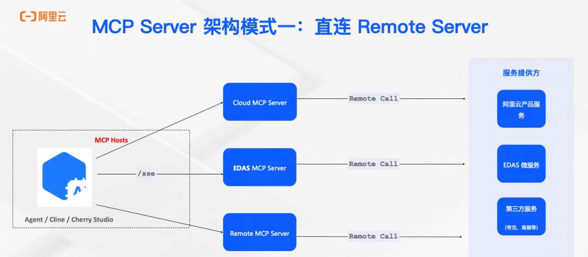
飞书里 MCP 写得很细。给员工看时不要展开所有架构，先让他们知道：MCP 是连接外部系统的方式，只有需要读系统或调工具时才用。
5.6 最容易犯的错
- 任务还没跑通，就急着做 Skill。
- 只是改文档，却硬要接 MCP。
- 接了工具，但没有写验收标准。
- 把插件当成万能按钮，不看它能不能读取当前材料。
- 不知道权限边界，把敏感数据随便交给工具处理。
6. 第六课：把复杂任务拆成工作流
飞书里讲 Agent 的重点，可以压缩成一句话：
给目标，观察现状，采取行动，检查结果，再继续调整。
这就是 Codex 最重要的使用方式。
6.1 不要一上来追求“自动完成”
先把任务拆成工作流。
| 阶段 | Codex 做什么 | 你检查什么 |
|---|---|---|
| 目标 | 复述最终交付物 | 有没有理解错 |
| 观察 | 读取文件、图片、网页、代码 | 有没有漏材料 |
| 计划 | 列出步骤和风险 | 顺序是否合理 |
| 行动 | 修改文件、生成内容、运行检查 | 过程是否有证据 |
| 反馈 | 根据结果继续修 | 问题是否被真正解决 |
| 收尾 | 给最终说明和后续维护方法 | 别人能不能接着用 |
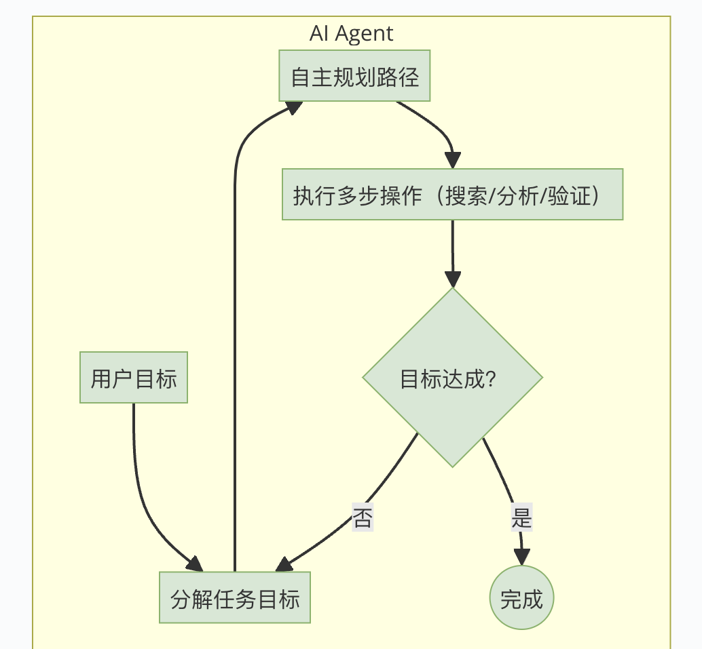
这张图用来说明 Agent 不是魔法，而是围绕目标持续观察和行动。放到 Codex 教程里，只需要讲工作闭环。
6.2 什么任务要先让它计划
| 任务情况 | 要不要先计划 | 原因 |
|---|---|---|
| 只改一句话 | 不用 | 直接改更快 |
| 改整篇教程 | 要 | 容易改丢重点 |
| 做网页并部署 | 要 | 涉及内容、图片、样式、检查和上线 |
| 接 MCP 或外部工具 | 必须 | 涉及权限、接口、失败处理 |
| 批量处理文件 | 必须 | 防止误删、误改、路径错 |
| 领导要看的最终版 | 必须 | 要先确认方向再执行 |
6.3 让 Codex 自己做 review
每次大改后，都让它从读者角度 review。
检查问题：
- 第一屏是否知道这是干什么的。
- 读者是否知道下一步该点哪里。
- 有没有一段太长、像说明书。
- 有没有标题换行奇怪。
- 有没有图片没有解释用途。
- 案例是不是抢了教程主线。
- 桌面右侧是否空了一大块。
- 手机端文字和图片是否挤在一起。
6.4 失败了怎么处理
失败不要从头来。
按这张表继续追：
| 问题 | 怎么追 |
|---|---|
| 内容写偏 | 回到目标和读者，要求它只改偏掉的段落 |
| 太像 AI | 要求它改成更像内部培训口吻，少用大词，多写动作 |
| 图放错 | 要求它说明每张图服务哪个步骤，再重新排序 |
| 网页乱 | 要求它截图、指出布局问题、只改 CSS 或对应组件 |
| 漏案例 | 要求它列出案例清单，再和页面逐项对照 |
| 上线没更新 | 要求它检查提交、Pages 缓存、线上 HTML 内容 |
7. 第七课：网页、浏览器和验收
如果输出是网页、后台、表单、教程页，不能只看代码或文字。
必须打开浏览器看。
7.1 Browser、Chrome、Playwright 分别适合什么
| 工具 | 适合场景 | 员工怎么理解 |
|---|---|---|
| 内置浏览器 | 检查本地网页、普通页面、截图 | Codex 自己打开页面看效果 |
| Chrome | 需要你的登录态、已有账号、真实浏览器状态 | 用你电脑上的 Chrome 去看真实页面 |
| Playwright | 需要重复自动检查、保存截图、点击流程 | 写一个自动验收脚本，以后反复跑 |
7.2 网页验收要看什么
| 维度 | 必须检查 |
|---|---|
| 第一屏 | 知道主题、入口清楚、图片不遮文字 |
| 导航 | 左侧导航能跳，移动端不挤 |
| 正文 | 段落不累，表格不爆，标题不奇怪换行 |
| 图片 | 路径正确、加载成功、大小合适、配文说明用途 |
| 案例 | 完整、不漏、不让单个案例抢主线 |
| 手机端 | 文字不溢出，卡片不挤，图片不把页面撑爆 |
| 线上版 | 不是只本地好看，分享链接也要正常 |
7.3 不要只看第一屏
网页最容易出问题的地方通常不在第一屏。
要滚到：
- 最长的章节。
- 表格最多的地方。
- 图片最多的地方。
- 案例卡片连续出现的地方。
- 手机端宽度最窄的地方。
- 页面底部和发布链接。
7.4 一个网页验收流程
这是网页类任务的标准收尾流程。任何教程页、培训页、产品介绍页上线前都可以这样做。
浏览器打开、桌面截图、手机端截图、导航测试、图片检查、禁用词检查、线上验证。
准备本地地址或线上地址、重点章节、必须检查的图片、不能出现的词、桌面和手机尺寸。
第一步，打开页面；第二步，检查第一屏；第三步，点击导航跳到重点章节；第四步，滚到案例库；第五步，切手机尺寸；第六步，检查图片是否加载；第七步，输出问题清单并修复。
没有缺图；没有横向溢出；导航能跳；案例完整；桌面没有大空白；手机端不挤；线上版本和本地一致。
桌面截图、手机截图、问题清单、修复说明、最终线上链接。
打开当前 Codex 教学网站，检查第 9 课案例库和手机端，列出 5 个读者可能卡住的地方。
只看第一屏；只看电脑不看手机；只看本地不看线上；图片加载失败还以为完成了。
8. 第八课：把好用的方法沉淀下来
员工第一次会用，不代表团队稳定会用。
团队要把好用方法沉淀成规则、Skill、检查表和训练任务。
8.1 AGENTS.md 适合放什么
AGENTS.md 可以理解成项目里的“给 Codex 的工作说明”。
适合写：
- 这个项目怎么启动。
- 修改后要跑哪些检查。
- 哪些文件不要动。
- 文案风格和禁用词。
- 提交或部署前必须做什么。
不适合写：
- 一次性任务需求。
- 还没确定的想法。
- 只有某个人临时想要的口味。
8.2 Skill 适合沉淀什么
当一件事满足下面三条，就适合做 Skill：
- 经常重复。
- 步骤固定。
- 验收标准固定。
例子：
| 重复任务 | Skill 可以包含什么 |
|---|---|
| 飞书资料改网站 | 提取结构、筛掉无关内容、图片映射、网页检查、发布验证 |
| 会议纪要整理 | 决策、待办、风险、负责人、截止时间 |
| PPT 生成 | 模板、页数、字体、图片位置、导出检查 |
| 网页验收 | 桌面、手机、导航、图片、禁用词、线上链接 |
| 图片增强 | 清晰度、尺寸、用途、页面位置 |
8.3 自动化适合什么
自动化适合周期性任务，不适合还没跑通的新流程。
| 周期任务 | 可以自动化什么 |
|---|---|
| 每周检查网站 | 打开页面、检查图片、截图、报告异常 |
| 每月整理资料 | 读取文件夹、分类、生成目录 |
| 上线后监控 | 检查链接是否可访问、关键页面是否加载 |
| 团队复盘 | 收集一周任务、总结常见问题和改进点 |
8.4 团队沉淀顺序
不要一上来就做 Skill 或自动化。
顺序应该是：
- 人先跑通一次。
- Codex 辅助跑通一次。
- 写出检查表。
- 连续用 2-3 次。
- 稳定后再做 Skill。
- 需要周期执行时再做自动化。
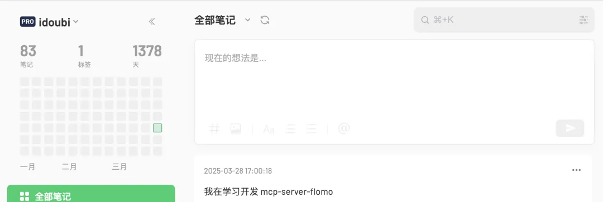
这类图适合放在进阶部分：不是让员工一开始就开发 MCP，而是让他们知道工具接入后必须能看到结果、能复查。
9. 第九课：Codex 实战案例库
这一课专门放飞书侧栏里的 Codex 案例，案例一到案例十五全部放在这里。
教学是主线，案例是辅助。每个案例都要回到“准备什么、照着做、怎么验收、交付什么”这四件事。
这 15 个案例是同一级别的训练任务，不按重要程度排序。员工可以按自己的岗位先挑一个练，再回到前面的学习主线补方法。
这张图说明本课来源：飞书侧栏里有一整组 Codex 案例。网站会把它们全部整理成可练习、可验收的员工教程。
9.0 先看案例地图
| 飞书案例 | 练什么能力 | 照着做的小任务 | 最终交付物 |
|---|---|---|---|
| 案例一：知识库问答 | 让 Codex 基于资料回答 | 整理 3 份资料，测试 5 个真实问题 | 知识库目录 + 问答验收表 |
| 案例二：12306 查询工具 | 让 Codex 调外部实时工具 | 补齐参数，完成一次查询和一次异常测试 | 工具调用记录 + 异常处理表 |
| 案例三：Chrome | 让 Codex 进入真实网页检查 | 打开网页，截图，列出 3 个问题 | 截图证据 + 页面问题清单 |
| 案例四：DKFile | 批量处理本地文件 | 整理 20 个乱命名文件，输出对照表 | 处理前后对照表 |
| 案例五：Draw.io MCP | 把复杂流程画清楚 | 把一个 SOP 画成流程图并补异常分支 | 流程图 + 分支说明 |
| 案例六：Figma MCP | 读设计稿并落地页面 | 选一个设计稿，生成页面并截图对比 | 页面成品 + 对比截图 |
| 案例七：GitHub Actions | 让 CI 自动检查质量 | 给仓库加一次自动构建检查 | CI 工作流 + 失败修复记录 |
| 案例八：HyperFrames | 把教程做成视频 | 把一个操作步骤做成 30 秒教学视频 | 教学短视频 |
| 案例九：LLM Wiki | 把资料整理成知识库 | 把 5 篇旧教程整理成 Wiki 目录 | 知识库目录 + 页面模板 |
| 案例十：Obsidian | 长期整理个人和团队知识 | 建立 4 类笔记结构和标签规则 | 笔记分类 + 模板 + 链接规则 |
| 案例十一：Notion | 把笔记变成可分享网站 | 把一篇乱笔记改成可跳转网页 | 可分享网页 |
| 案例十二：PPT Skill | 稳定生成 PPT 文件 | 用固定模板生成 8 页培训 PPT | PPTX 文件 + 生成脚本 |
| 案例十三：Playwright | 自动检查网页 | 写脚本检查首页和手机端截图 | 测试脚本 + 截图 |
| 案例十四：飞书 CLI | 提取云文档资料和图片 | 提取一篇云文档，做结构映射表 | 结构映射表 + 图片清单 |
| 案例十五：云服务 | 部署分享和回滚 | 把一个静态网页发到线上并记录回滚方式 | 线上链接 + 回滚记录 |
| 补充：image2 | 截图转可编辑设计稿 | 拿一张截图转成可编辑草稿并人工复核 | 可编辑设计稿 + 调整清单 |
9.1 案例一：Codex × 知识库问答：让回答有依据
知识库问答案例训练员工把“资料”变成“可回答的问题”。重点不是让 Codex 说得像人，而是让回答有来源、有边界、能复查。
飞书侧栏案例一：Codex × 知识库问答。
资料整理、知识库结构、引用来源、回答验收。适合客服 FAQ、产品手册、培训资料、内部制度。
准备 3-10 份真实资料，最好包含产品说明、常见问题、旧回复、更新记录。先删掉明显过期和无关内容。
第一步，把资料按主题分组；第二步，让 Codex 提取每组的用途和关键词；第三步，整理成知识库页面；第四步，准备 10 个真实问题测试；第五步，检查回答有没有引用资料。
回答能说出依据来自哪份资料；不知道时会说明不确定；不会编不存在的政策；同一个问题换个问法也能答到同一类资料。
知识库目录、资料来源表、10 个测试问题、问答验收表。
拿一份产品说明和一份客服 FAQ，让 Codex 整理成“新员工可以直接问”的知识库，并测试 5 个问题。
只把资料复制进去不分类；资料过期也不标记；回答没有来源；把知识库当聊天机器人，不做维护。
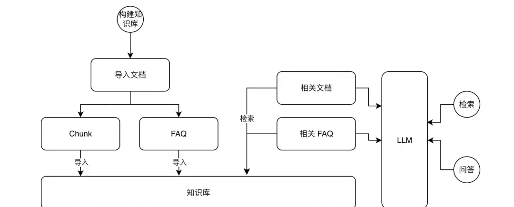
这张图用来说明知识库问答的入口。员工要学的是：先有资料，再有检索，再有回答。
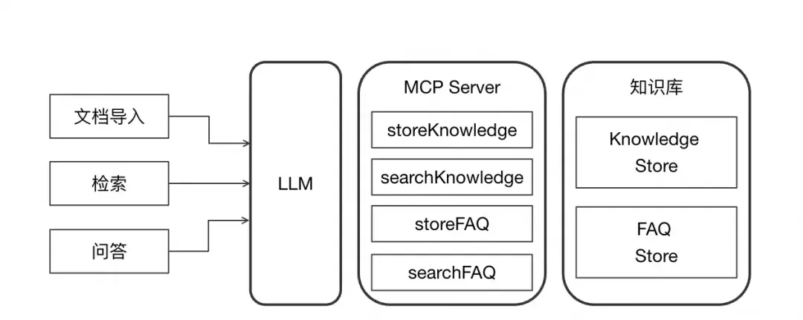
看流程：构建知识库、检索、回答、验证。内部教程可以按这四步讲，不要直接跳到“让 AI 回答”。
9.2 案例二：Codex × 12306 查询工具：学会外部实时查询
12306 查询工具训练员工理解“查询型工具”。它不是教大家买票，而是教大家怎么让 Codex 调外部实时数据，并判断结果是否可靠。
飞书侧栏案例二：Codex × 12306 查询工具。
MCP 工具调用、参数填写、实时结果、异常处理。适合车票、库存、订单、物流、价格这类会变化的数据。
准备工具说明、可用参数、正常案例、无结果案例、错误案例。先明确工具只能查询，不能替你确认付款或提交敏感操作。
第一步，写清查询目标；第二步，补齐出发地、目的地、日期等参数；第三步，让 Codex 调工具；第四步，看返回字段；第五步，用异常问题测试它会不会乱答。
正常查询能返回结果；条件不全会追问；无结果会说明没有查到；接口失败会说明失败原因；不会越权做敏感操作。
工具调用记录、参数表、异常处理表、查询结果说明。
设计一个库存查询或物流查询练习，让 Codex 先确认参数，再调用工具，再解释结果。
参数没给全就让它查；把实时查询结果当永久结论；接口失败时让它编答案；没有记录异常情况。
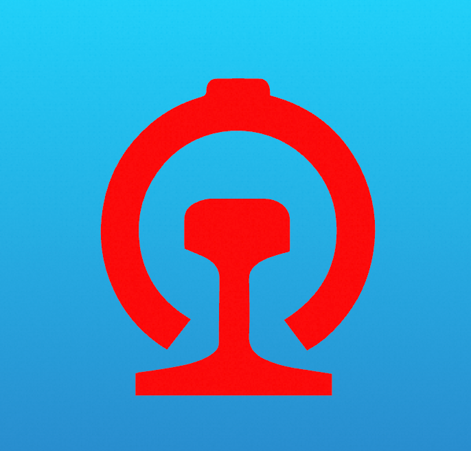
这张图用来解释“工具能做什么、不能做什么”。员工要先看工具边界，再让 Codex 调用。
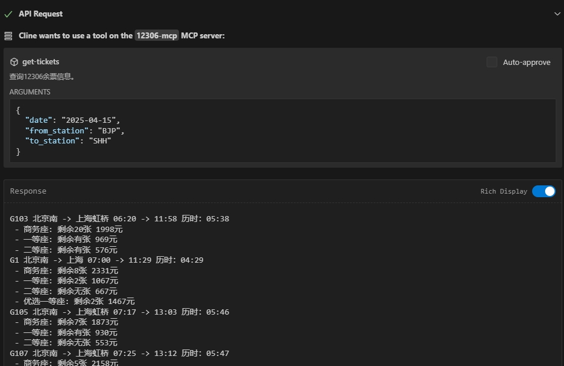
这张图展示了工具名、输入参数和返回结果。查询类工具必须这样验收。
9.3 案例三：Codex × Chrome：浏览器操作与验收
Chrome 案例训练员工让 Codex 进入真实网页，看页面、点按钮、截图、发现问题。它适合需要登录态、真实页面状态、真实浏览器兼容性的任务。
飞书侧栏案例三：Codex × Chrome。
浏览器自动操作、截图检查、页面阅读、表单测试、线上页面验收。
准备要访问的网址、账号权限、检查目标、不能点击的危险按钮。涉及提交、付款、删除、群发时必须人工确认。
第一步，打开目标页面；第二步，让 Codex 描述页面结构；第三步，执行安全操作；第四步，保存截图；第五步，列出发现的问题；第六步，复查修复后页面。
页面能打开；截图能证明状态；问题有位置和描述；没有进行危险操作；修复后能再次验证。
页面截图、问题清单、复查截图、最终验收说明。
让 Codex 打开一个内部教程页面，检查导航、图片、按钮和手机端，并输出问题清单。
没有说明不能点什么；只让它看不让它截图；发现问题不复查；把浏览器操作当成无风险操作。
9.4 案例四：Codex × DKFile：本地文件批处理
DKFile 类案例训练员工把本地文件处理交给 Codex：分类、改名、检查重复、导出清单。重点是批量操作前先做预览，不能直接乱改。
飞书侧栏案例四：Codex × DKFile。
本地文件整理、批量命名、图片归档、资料迁移、结果核对。
准备文件夹路径、命名规则、分类规则、备份位置。先让 Codex 列出计划和预览结果，再执行。
第一步，扫描文件；第二步，列出文件类型和数量；第三步，生成预览表；第四步，小范围试跑；第五步，检查结果；第六步，全量执行；第七步，输出处理前后对照表。
没有误删；文件数量对得上；命名规则一致；失败文件被单独列出；能回看处理前后差异。
文件清单、预览表、处理后文件夹、异常文件表。
准备 20 个乱命名图片，让 Codex 按日期和用途整理，并生成对照表。
不备份；不预览；直接全量改；改完没有对照表；路径里有中文或空格时不检查。
9.5 案例五：Codex × Draw.io MCP：把流程画出来
Draw.io MCP 案例训练员工把复杂流程变成图。适合 SOP、审批流程、数据流、培训流程。重点不是图好看，而是流程能被检查。
飞书侧栏案例五：Codex × Draw.io MCP。
流程图、SOP、系统关系、培训路线、异常分支。
准备流程文字、角色、开始和结束节点、异常情况。先让 Codex 列节点，再生成图。
第一步，把流程拆成节点；第二步，确认每个节点的负责人；第三步，补异常分支；第四步，生成流程图；第五步，对照文字检查；第六步，导出可编辑文件。
有开始和结束；节点顺序正确；异常分支清楚；图和文字一致；别人能按图执行。
流程图、节点表、异常分支说明、导出文件。
把“新员工学习 Codex 的 3 天流程”画成图，要求包含检查点和不通过时的处理方式。
只有大词没有动作；判断条件不清楚；流程图和正文说法不一致；没有异常分支。
流程图案例可以借这类图讲清楚：先把角色和连接关系画出来，再检查每条线代表什么动作。
9.6 案例六：Codex × Figma MCP：读设计稿并落地页面
Figma MCP 案例训练员工把设计稿落地成页面。它和其他案例同级，教学重点是：读结构、做页面、截图对比、继续修。
飞书侧栏案例六：Codex × Figma MCP。
读设计稿、理解组件、生成页面、检查还原度、移动端适配。
准备具体 Figma 文件或 Frame 链接、要落地的页面范围、可接受的差异、字体和颜色要求。只有截图也能参考，但最好有设计稿链接。
第一步，让 Codex 读取设计稿结构；第二步，确认页面模块和文字；第三步，生成页面；第四步，用浏览器截图对比；第五步，修间距、字体、颜色和响应式。
页面能打开；桌面和手机不乱；主要文字、层级、颜色、间距接近设计稿；无法读取的细节被明确标出。
页面文件、桌面截图、手机截图、设计稿差异清单。
选一个 Figma 页面，让 Codex 做出本地网页，再用截图对比列出 5 个差异并修正。
只给截图不给链接；只说“照着做”；没有对比截图；没有检查手机端；把设计稿落地当成全部训练。
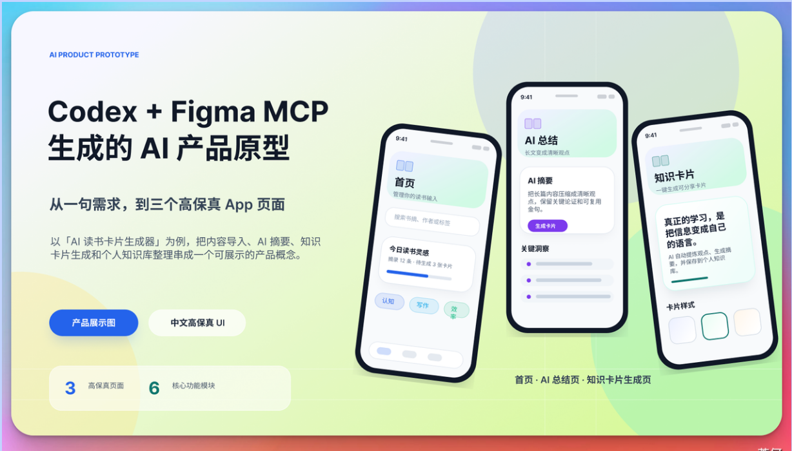
这张图来自飞书参考截图。它只放在案例六，和其他案例保持同级。
9.7 案例七：Codex × GitHub Actions：让 CI 帮你守住质量
GitHub Actions 案例训练员工不要只靠肉眼检查。能自动跑的检查，就交给 CI；失败以后，让 Codex 读日志、定位、修复、复跑。
飞书侧栏案例七：Codex × GitHub Actions。
自动测试、构建检查、失败定位、修复后复跑。适合网站、脚本、文档构建、前端项目。
准备 GitHub 仓库、本地能跑通的命令、需要自动检查的项目类型。先保证本地命令成功，再写 Actions。
第一步，让 Codex 找出本地检查命令；第二步，写最小 Actions 工作流；第三步，push 后看检查结果；第四步，失败就读日志；第五步，修复后复跑。
每次提交都有检查记录；失败原因能定位到命令、文件或依赖；修复后状态变绿；团队知道哪里看结果。
workflow 文件、一次成功运行记录、一次失败定位说明。
给一个网页项目加 GitHub Actions：每次 push 后自动跑构建，并把失败日志整理成中文原因。
看到红色只截图不看日志；工作流太复杂；本地都跑不通就直接上 CI；失败后不复跑确认。
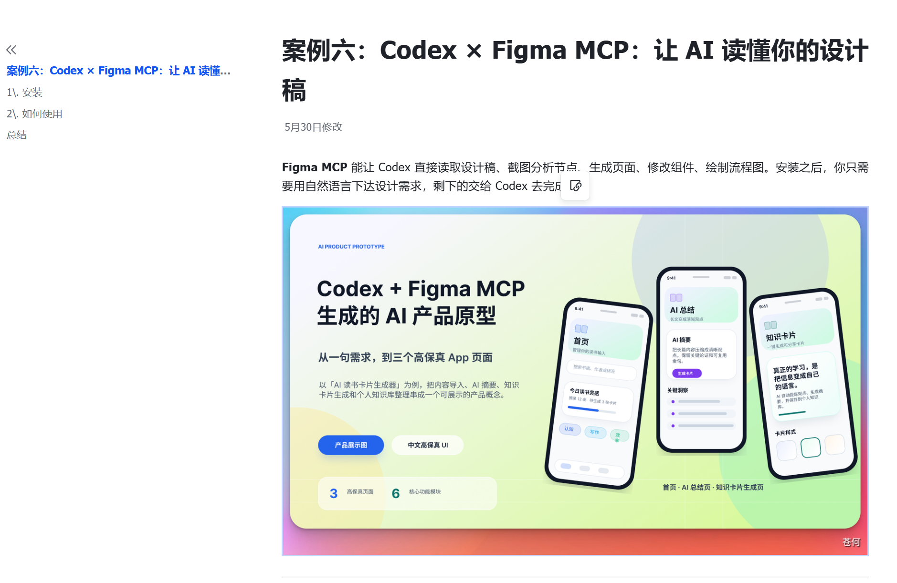
这张图保留飞书案例页的教学节奏：先说明用途，再给步骤，再让读者照着做。后续每个案例都按这个节奏写。
9.8 案例八：Codex × HyperFrames：把网页和脚本变成教学视频
HyperFrames 案例训练员工把静态教程变成动态说明。它是辅助教学，不是拿来堆特效。
飞书侧栏案例八：Codex × HyperFrames。
教学短视频、网页演示、流程动效、培训素材。适合把操作步骤讲给员工看。
准备脚本、页面截图、要演示的步骤、时长要求。先写脚本，再做视频，不要一上来做动效。
第一步，写清视频讲哪一个步骤；第二步，确定画面顺序；第三步，让 Codex 生成视频工程；第四步，本地预览；第五步，检查文字、画面、节奏；第六步导出。
视频能解释一个步骤；画面清楚；文字不遮挡；时长不拖；员工看完知道下一步做什么。
视频工程、预览截图、导出视频、脚本文案。
把“如何检查网页手机端”做成 30 秒教学视频，要求只讲一个动作，不要塞太多内容。
为了好看加太多动效；没有脚本；画面和讲解不同步；导出后没检查。
9.9 案例九：Codex × LLM Wiki：把资料整理成知识库
LLM Wiki 案例训练员工做资料整理。重点不是把内容变多，而是把散乱资料变成能查、能学、能维护的结构。
飞书侧栏案例九：Codex × LLM Wiki。
资料分类、目录设计、知识页拆分、来源记录、更新维护。
准备散乱资料、旧文档、截图、链接。先明确读者是谁：新人、客服、运营、技术，读者不同目录也不同。
第一步，收集资料；第二步，删掉无关内容；第三步，按主题建目录；第四步，每页写一句用途；第五步，给关键资料标来源；第六步，补检索入口。
新人知道从哪一页开始；每页主题单一；资料来源清楚；过期内容能被发现；目录能继续扩展。
知识库目录、页面模板、资料来源表、维护责任表。
把 5 篇旧教程整理成一个 LLM Wiki 目录，要求每篇都有“用途、适合谁、更新时间”。
把所有内容堆在一页；没有目录；没有来源；标题很大但里面没有可执行步骤。
9.10 案例十：Codex × Obsidian：整理个人和团队知识
Obsidian 案例训练员工做长期知识积累。它不是只做一篇漂亮笔记，而是建立能持续增长的知识结构。
飞书侧栏案例十：Codex × Obsidian。
个人笔记整理、团队知识链接、标签、双链、周复盘。
准备一个笔记库、旧笔记、常用主题、标签规则。先定少量一级分类，不要一开始就做复杂体系。
第一步，定 3-5 个一级分类；第二步，把旧笔记归档；第三步，用标签标状态；第四步，建立常用模板；第五步，每周让 Codex 帮你清理孤立笔记。
能通过目录找到内容；相关笔记互相链接；重复笔记减少；常用模板能复用；每周能维护。
Obsidian 目录结构、标签规则、笔记模板、清理清单。
整理一个“Codex 学习”笔记库，至少包含教程、案例、工具、问题记录四类。
分类太细；标签随手乱写；只搬运内容不整理；没有定期清理。
9.11 案例十一：Codex × Notion：把笔记变成可分享网站
Notion 案例和你这个网站最相关。它训练员工把原始笔记改成清楚、可跳转、可分享的教程页。
飞书侧栏案例十一：Codex × Notion。
笔记改写、目录跳转、图片排版、网站发布、读者体验优化。
准备原 Notion 文案、原图片、参考风格、不能改掉的表达、读者对象。先保留原内容，再优化结构。
第一步，提取原文和图片；第二步，保留原意；第三步，重排章节；第四步，短句化；第五步，加入导航；第六步，检查桌面和手机；第七步，发布链接。
读者能快速选入口；左侧导航能跳转；图片不压文字；手机端不挤；原文重点没有被改丢。
可分享网页、导航结构、图片清单、最终验收截图。
选一篇乱笔记，改成“新人照着做”的网页，必须有左侧导航、案例图、最终检查表。
重新编一篇，不基于原文；图片乱放；只优化电脑端；把用户专门写的表达改掉。
9.12 案例十二：Codex × PPT Skill：稳定生成 PPT 文件
PPT Skill 案例训练员工把可重复文件交付做稳。重点不是让模型随便排版，而是让 Skill 和脚本负责确定性生成。
飞书侧栏案例十二：Codex × PPT Skill。
固定风格 PPT、培训课件、汇报模板、批量生成文件。
准备 PPT 模板、品牌颜色、页数、每页标题、图片素材。先确定结构，再生成文件。
第一步，准备模板；第二步，写清页数和结构；第三步，让 Codex 生成内容大纲；第四步，用脚本生成 PPTX；第五步，打开检查版式；第六步，不合格就改模板或脚本。
能生成真实 PPTX 文件；字体、页边距、标题层级稳定；重新生成不会大幅跑偏；图片不遮挡文字。
PPTX 文件、生成脚本、模板说明、版式检查记录。
把本教程第 1-3 课生成 8 页培训 PPT，要求每页标题不换行、文字不超出。
只让模型描述 PPT，不生成文件；没有模板；没有打开文件检查；每次风格都不一样。
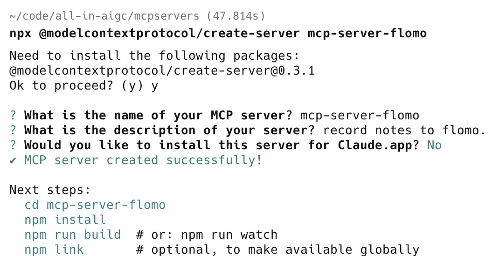
PPT Skill 的重点也是这个逻辑：模型负责判断和规划，脚本负责稳定生成文件。员工要记住“能生成真实文件”才算完成。
9.13 案例十三：Codex × Playwright：自动检查网页
Playwright 案例训练员工做网页验收。它比人工点页面更稳定，尤其适合检查导航、按钮、表单、截图。
飞书侧栏案例十三：Codex × Playwright。
自动化浏览器测试、截图对比、移动端检查、回归测试。
准备本地或线上网址、要测试的按钮和链接、桌面/手机尺寸、期望结果。先用人工跑一遍，再写自动化。
第一步，写要检查的页面和动作；第二步，让 Codex 写 Playwright 脚本；第三步，运行；第四步，保存截图；第五步，失败后定位选择器或页面问题；第六步，修复后复跑。
脚本能打开网页；能完成点击或输入；截图保存成功；失败信息能看懂；桌面和手机都测过。
Playwright 脚本、桌面截图、手机截图、测试结果。
写一个脚本检查本网站：打开首页、点击第 9 课、确认案例十五存在、保存手机端截图。
没有等待页面加载；选择器随便写；只测一个屏幕宽度；脚本跑完不看截图。
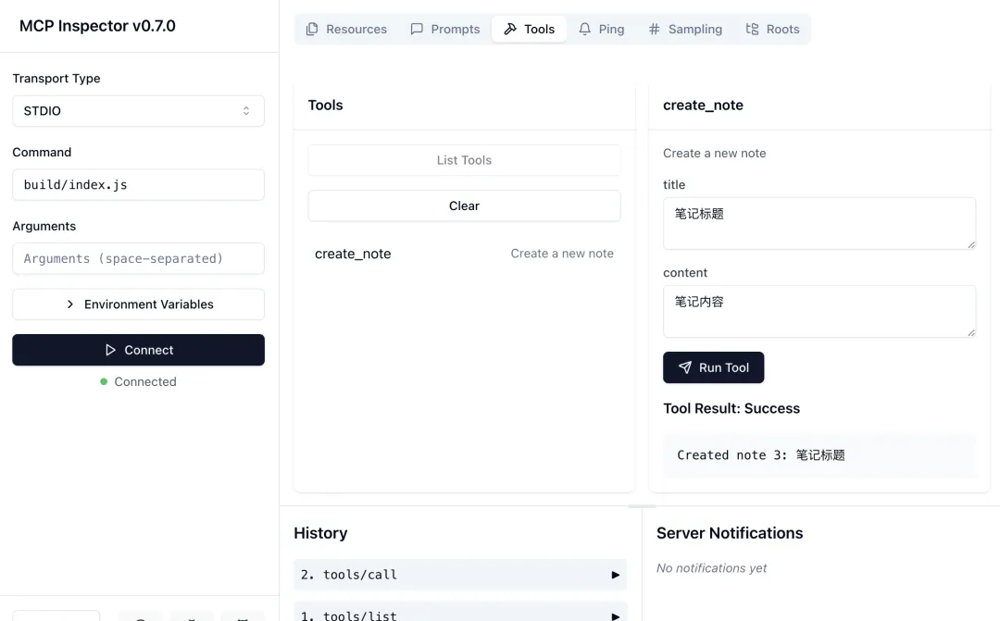
Playwright 和 Inspector 一样，核心都是把动作和结果变成可复查证据。不要只说测过，要留下截图和结果。
9.14 案例十四：Codex × 飞书 CLI：提取云文档资料和图片
飞书 CLI 案例训练员工做资料迁移。就像这次网站，先把飞书结构、文字、图片提出来，再决定哪些保留、哪些删掉。
飞书侧栏案例十四：Codex × 飞书 CLI。
云文档提取、图片迁移、结构映射、内部培训资料重做。
准备飞书链接、访问权限、要保留的范围、要删除的范围。先只处理当前页和相关子页，不要把整个知识库都搬进来。
第一步，抓当前页；第二步，列出模块、图片、子页面；第三步，做映射表；第四步，保留教学相关内容；第五步，删除宣传和无关内容；第六步，生成网站草稿。
有结构清单；图片能打开；无关内容删干净；保留内容能对应到网站章节；没有漏掉侧栏案例。
结构映射表、图片清单、保留/删除清单、网站草稿。
给一篇飞书教程做迁移：输出“原模块 - 新网站章节 - 图片用途 - 是否保留”的表。
只看第一页；漏掉侧栏案例；图片路径失效；把无关人事、宣传、案例故事也搬进来。
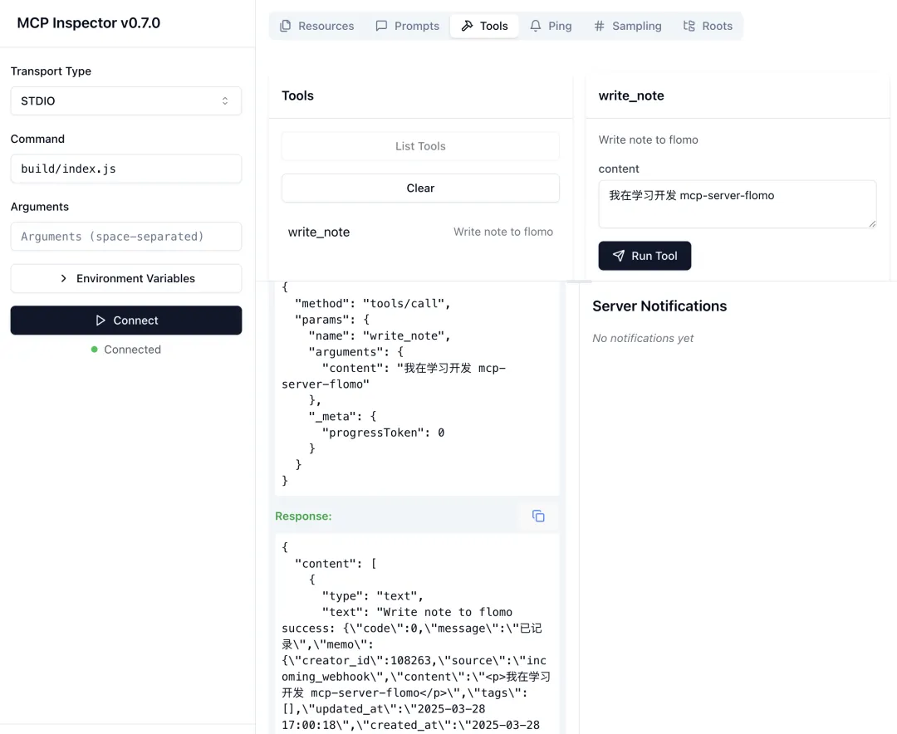
飞书资料提取后也要这样检查结果：有没有内容、有没有图片、有没有失败项、能不能对应回原页面。
9.15 案例十五：Codex × 云服务：部署分享和回滚
云服务案例训练员工做最后一公里：网站、文档或工具做好以后，怎么让团队能访问，出问题怎么退回。
飞书侧栏案例十五：Codex × 云服务。
部署网站、生成分享链接、检查线上页面、准备回滚。
准备本地成品、部署仓库或云服务、访问权限、回滚方式。发布前先确认本地预览没问题。
第一步，本地预览；第二步，确认资源路径；第三步，部署到 GitHub 或云服务；第四步，打开线上链接检查；第五步，记录发布时间；第六步，保留回滚方式。
领导和员工能打开链接；图片正常；手机端正常；旧版本能找回；发布步骤可复用。
线上链接、发布时间、版本号、线上检查截图、回滚说明。
把一个静态网页部署到 GitHub Pages，发布后检查图片、手机端、导航，并记录如何回滚。
本地能看，线上图片打不开；没有记录版本；没有回滚；部署后不检查手机端。
9.16 补充：Codex image2：截图直出设计稿
image2 这类案例适合放在最后。
它解决的是“我有截图或参考图，想快速变成可编辑设计稿”。
把截图、参考图或页面状态转成更可编辑的设计稿。
截图到设计稿、结构保留、可编辑性检查。它适合辅助设计交付，不适合替代最终设计审查。
准备清晰截图、目标尺寸、必须保留的模块、不能改的文字。截图越清楚，结果越容易复核。
第一步，准备清晰截图；第二步，说明要保留哪些模块；第三步，让 Codex/image2 生成设计稿方向；第四步，进入设计工具调整组件和文字；第五步，让人复核。
设计稿能继续编辑；主要结构和截图一致；文字没有乱改；能交给设计或前端继续做。
可编辑设计稿、截图对比、需要人工调整的清单。
拿一个内部工具截图，转成 Figma 草稿，再标出哪些地方需要设计师二次处理。
截图太糊；只追求像，不检查可编辑性；没有保留关键文字；没让人复核。
10. 团队训练和落地
这份教程最后要服务团队，不是只给一个人看。
10.1 新人 3 天训练
| 时间 | 学习内容 | 练习 | 交付物 |
|---|---|---|---|
| 第 1 天 | 第 1-2 课 | 列岗位任务，跑一个小任务 | 完整任务记录 |
| 第 2 天 | 第 3-5 课 | 写任务卡，做一次工具选择 | 任务卡 + 工具选择表 |
| 第 3 天 | 第 6-9 课 | 选一个案例做练习 | 验收截图 + 案例练习记录 |
10.2 讲师怎么带
不要先讲概念。
按这个顺序带：
- 先让员工说自己的岗位任务。
- 选一个小任务跑通。
- 让 Codex 复述计划。
- 看它执行和验收。
- 指出哪里读着累、哪里没证据。
- 让员工继续 push 到能交付。
- 最后把流程沉淀成检查表或 Skill。
10.3 团队统一标准
- 任何大任务先写任务卡。
- 任何资料整理先区分原文、参考、图片、禁用范围。
- 任何网页类结果必须检查桌面端和手机端。
- 任何图片必须有用途说明，不放纯装饰图。
- 任何外部工具先判断是否真的需要，再接插件或 MCP。
- 任何可复用流程先人工跑通，再沉淀 Skill。
- 任何上线结果必须给线上链接、检查结果和回滚方式。
10.4 最终验收表
| 维度 | 必须达到 | 不通过就怎么改 |
|---|---|---|
| 教程主线 | 读者知道先学什么、后学什么 | 重排章节顺序 |
| 文字 | 短句、步骤、少废话 | 拆段、删空话、加动作 |
| 图片 | 图片能降低理解成本 | 换位置或删掉无用图 |
| 案例 | 案例只辅助方法，不抢主线 | 补“学什么、照着做、验收、常见错” |
| 工具 | 先判断是否需要，再接入 | 补工具选择表 |
| 网页 | 桌面、手机、导航、图片都正常 | 修布局和资源路径 |
| 线上 | 员工打开链接看到新版 | 重新部署并查线上资源 |
10.5 最后记住
Codex 用得好，不是因为某一句话写得神。
是因为你把工作交代清楚，把资料给够，把过程看住，把结果验收，再把好流程沉淀下来。
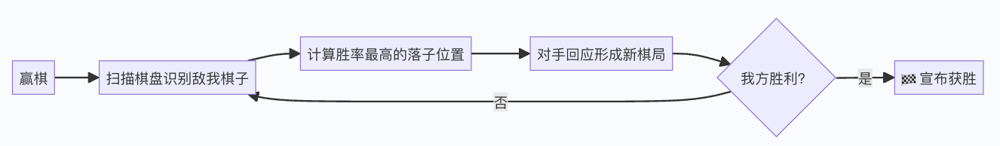
最后回到闭环：目标清楚，步骤清楚，反馈清楚，结果才会稳定。
10.6 以后怎么维护这份教程
这份教程不是一次性页面。
后续维护按三条规则走：
| 什么时候要更新 | 怎么更新 |
|---|---|
| Codex 出了新插件或新功能 | 先判断它解决什么工作问题，再放进第 5 课或第 8 课 |
| 团队跑出新的好案例 | 不要只放截图，要补“学什么、准备什么、照着做、怎么验收” |
| 员工反馈读不懂 | 先改对应章节的步骤和例子，不要先加更多概念 |
| 网页排版变乱 | 先本地截图检查，再改 CSS，最后部署线上验证 |
| 某个案例过时 | 标记为待更新，或者换成更贴近团队工作的案例 |
官方文档可以作为能力边界参考，但员工培训页不要写成官方说明书。
员工真正需要的是：知道什么时候用、怎么开始、怎么检查、错了怎么继续修。
维护时可以参考这些官方页面，但只把和员工使用有关的部分转成教程：
| 官方页面 | 用来确认什么 | 放进教程时怎么写 |
|---|---|---|
| Codex 最佳实践 | 任务上下文、验证、AGENTS、Skill、MCP、自动化这些核心习惯 | 改成“怎么交任务、怎么验收、怎么沉淀” |
| Codex CLI | 本地命令行、图片输入、代码 review、云任务、MCP、脚本化能力 | 改成“本地项目怎么让 Codex 帮忙” |
| Codex IDE Extension | 在编辑器里跑本地任务、委托云任务、应用云端 diff | 改成“编辑器里怎么继续一个任务” |
| Codex web / Cloud | 后台跑任务、并行任务、连接 GitHub、创建 PR | 改成“什么时候丢到云端，回来怎么验收” |
| Agent Skills | Skill 的结构：说明、资源、脚本、可复用流程 | 改成“什么流程值得做成 Skill” |
| MCP | 把 Codex 接到浏览器、Figma、文档库、第三方工具 | 改成“什么时候需要接外部系统” |
| AGENTS.md | 项目内持久规则和检查命令 | 改成“团队项目规则放哪里” |